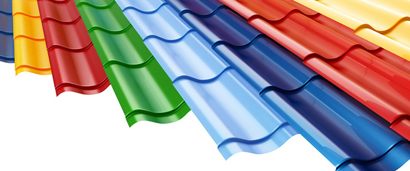

Не секрет, что на сегодняшний день подбор цвета металлочерепицы довольно широк, и от этого одновременно легко и тяжело подобрать именно тот цвет кровельного покрытия, который придется по вкусу и вам, и вашей семье.
Определить подходящую расцветку для металлочерепицы можно не только внешне на витрине строительного магазина, но и при помощи специальных программ, позволяющих выполнить визуальную оценку сочетания цвета фасада вашего дома или коттеджа, забора и других особенностей владений с цветом будущего кровельного покрытия.
Для этого обычно достаточно выполнить 3D макет участка, после чего останется только экспериментировать, изменяя цвет металлочерепицы. Если же вы находитесь на этапе строительства дома и еще не определили цвет фасада, начать можно с него, после чего постепенно перейти выбору расцветки кровли.
Это в какой-то мере поможет упростить процесс выбора, поможет создать стильный, подчеркивающий индивидуальность образ вашего дома.
Как выбрать расцветку кровли из металлочерепицы
Кровельный материал практически любого из крупных современных производителей металлочерепицы представлен в богатом цветовом ассортименте. Как правило, выбор не ограничивается 5-10 цветами, а скорее превышает 50 различных цветов и их оттенков, из которых, наверняка, каждый сумеет выбрать для себя подходящий вариант.
Рассмотрим плюсы и минусы наиболее популярных цветовых решений, а так же дадим советы, как подобрать цвет металлочерепицы, в наибольшей степени подходящий под тот или иной типаж:
«Зеленый мох» или попросту металлочерепица зеленого цвета. Такое покрытие, как и его ближайшие оттенки – фисташковый и салатовый – пробуждают в человеке ассоциации с естественными оттенками природы, цветом листьев деревьев и травы. Именно зеленные цвета по традиции ассоциируется с буйным ростом и цветом самой жизни. Насыщенный зеленый в окраске металлочерепицы, помимо прочего способствует настрою человека на спокойную волну. Применение приглушенно-зеленного оттенка в отделке не только кровли, но и других элементов дома может обеспечивать создание атмосферы концентрации и сосредоточенности.
Коричневую металлочерепицу по обыкновению считают символом поглощения и сплоченности, уверенности в себе и способности преодоления любых трудностей. Не менее часто в сравнении с зеленым встречающийся в природе коричневый цвет в разнообразных вариациях его оттенка создают ассоциацию, пожалуй, наиболее натурального. Кроме того, коричневый является одновременно и консервативным цветом – воплощением стабильности и сдержанности. Как правило, металлочерепица – цветовая гамма которой выполнена в коричневых тонах, выбирается людьми, для которых чувство безопасности – одна из основных прерогатив. Наиболее гармоничным считается использование коричневой и темно-коричневой металлочерепицы при обустройстве домов, расположенных среди деревьев – в сочетании с коричневыми кронами и листвой деревьев такая крыша из металлочерепицы будет наиболее уместной.
Металлочерепица цвета синевы лучше всего смотрится в светлое время и в светлых местах, поэтому при выборе синего цвета для кровли рекомендуется устраивать во дворе вечернее освещение. Синий цвет оказывает на человека расслабляющее и успокаивающее воздействие во многих отношениях, тем не менее, не следует увлекаться слишком темными оттенками этого цвета, поскольку они, наоборот, способствуют развитию депрессии. По этой причине коллекции большинства производителей металлочерепицы включают в себя только светло- и серо-синие оттенки синего, выглядящие в умеренной степени нейтрально. В комплексе с синей черепицей одной из наиболее удачных вариаций могут считаться белые аксессуары как на фасаде здания, так и на его крыше. Органично такая крыша будет смотреться рядом с рекой или другим водоемом.
Металлочерепица – цвет которой – бордово-красный, пребывая на крыше дома, олицетворяет собой неуемную энергию, движение и волю к победам, указывает на страсть и могущество своих владельцев. С точки зрения психологии красный цвет способен побудить даже в не в меру спокойного человека как к психологической, так и физической активности. Поэтому красный и его оттенки зачастую считаются выбором бизнесменов, дизайнеров и вообще многих успешных и деятельных личностей. Одним из наиболее популярных оттенков красного в металлочерепичном покрытии считается цвет «красное вино». Его сочетание с другими родственными оттенками – коричневым, лиловым, бордовым в аксессуарах кровли из металлочерепицы являются самым удачным решением. Кроме того, металлочерепица – подбор цвета которой был остановлен на оттенке красного вина, неплохо будет смотреться в сочетании с белыми, серыми, темно-серыми и черными аксессуарами.
Что касается светлых цветов металлочерепицы, то здесь одним из немногих удачных вариантов может считаться серое покрытие. Его целесообразно использовать в не очень светлых и даже несколько затемненных местах, к примеру среди деревьев и т.п.
Металлочерепица в Алматы
Источник: metallocherepica-pro.ru